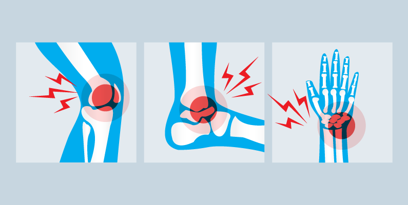
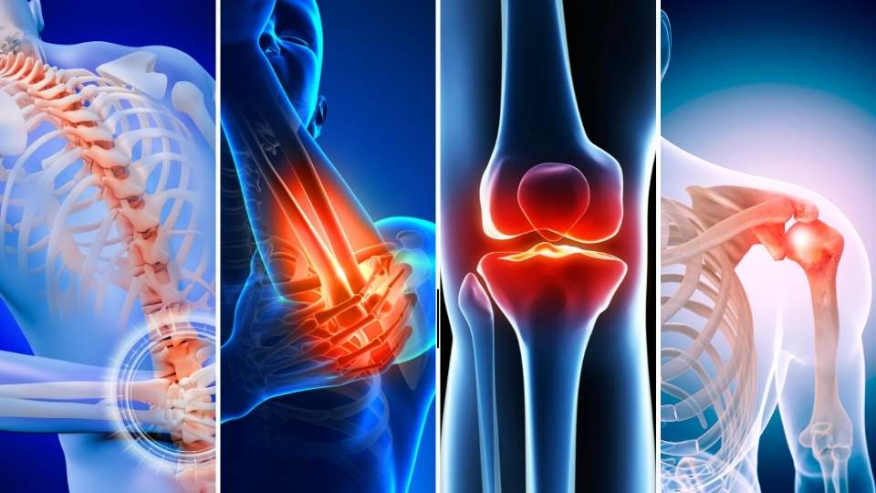
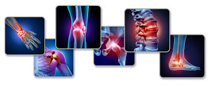
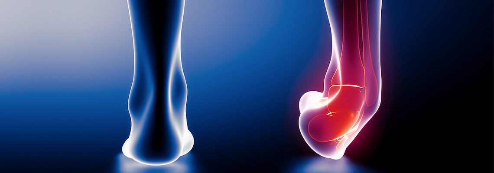
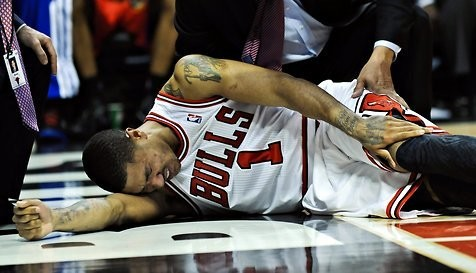

Sports Injuries
Exercising is good for you, but sometimes you can injure yourself when you play sports or exercise. Accidents, poor training practices, or improper gear can cause them.
Some people get hurt because they are not in shape. Not warming up or stretching enough can also lead to injuries. Sports injuries are divided into two broad categories,
acute and chronic injuries. Acute injuries happen suddenly, such as when a person falls, receives a blow, or twists a joint, while chronic injuries usually result from overuse
of one area of the body and develop gradually over time. Examples of acute injuries are sprains and dislocations, while some common chronic injuries are shin splints and
stress fractures. Treatment for a sports injury depends on the type of injury, but minor ones can usually be treated at home by resting, icing, compressing, and elevating
(R-I-C-E) the injured part of the body. For more serious injuries, you will need to see a health care provider, and you may need to be set up for a courseof physical
therapy for rehabilitation and/or fitted for a cast, splint, or brace. In some cases, you may need surgery. A rehabilitation program that includes exercise and other
types of therapy is usually recommended before resuming the sport or activity that caused the injury.




- Bone fracture
- A fracture is a break in a bone that occurs from either a quick, one-time injury, known as an acute fracture, or from repeated stress, known as a stress fracture. Growth plate fractures are unique to children who are still growing.
- Dislocation
- When the two bones that come together to form a joint become separated, the joint is described as dislocated. Contact sports such as football and basketball, as well as high-impact sports and sports that involve significant stretching or falling, cause most dislocations. A dislocated joint typically requires immediate medical treatment, but sometimes the bones move back into place on their own. A dislocation is a painful injury and is most common in shoulders, elbows, fingers, kneecap, and femur-tibia or knee.
- Sprain
- Sprains are stretches or tears of ligaments, the bands of connective tissue that join the end of one bone with another. Sprains are caused by trauma such as a fall or blow that knocks a joint out of position. Sprains can range from first degree (minimally stretched ligament) to third degree (a complete tear). Areas of the body most vulnerable to sprains are ankles, knees, and wrists.
- Strain
- A strain is a twist, pull, or tear of a muscle or tendon, a cord of tissue connecting muscle to bone. Athletes who play contact sports can get strains, but they can also happen from repeating the same motion again and again, as in tennis or golf. Like sprains, strains can range from a minor stretch to a partial or complete tear of a muscle or tendon. This is most common in muscle or tendons between two joints.
- Tendinitis
- Tendinitis is inflammation of a tendon, a flexible band of fibrous tissue that connects muscles to bones. It often affects the shoulder, elbow, wrist, hip, knee, or ankle. Tendinitis can be caused by a sudden injury, but it usually results from carrying out the same motion over and over. People such as carpenters, gardeners, musicians, and certain types of athletes, such as golfers and tennis players, have a higher risk of tendinitis. Tendons become less flexible as you age, so you are more likely to get tendinitis as you get older.
- Bursitis
- Bursitis is inflammation of the bursae (plural of “bursa”), small, fluid-filled sacs that act as cushions between a bone and other moving parts, such as muscles, tendons, or skin. Bursitis can be caused by a one-time event like a blow or fall. It can also result from repeating the same motion many times, like throwing a ball, or from prolonged pressure, such as from kneeling on a hard surface or leaning on the elbows. It usually affects the shoulders, elbows, hips, or knees.
- Ankle sprain
- You can sprain your ankle when you roll, twist, or turn your ankle in an awkward way, stretching or tearing the ligaments in the joint. It can happen when you land awkwardly when jumping or pivoting, when walking on an uneven surface, or when someone else lands on your foot. People who play sports in which there is a lot of pivoting, such as volleyball and basketball, are at risk of an ankle sprain.
- Torn ligament.
- When the knee is over-extended or twisted, the ligaments within it can tear. Anterior cruciate ligament (ACL) injuries are especially common in athletes. They often happen when the person changes direction suddenly or lands from a jump.
- Rotator cuff injury.
- These are the most common shoulder injuries. The rotator cuff is a group of four muscles and tendons that stabilize the shoulder joint. Rotator cuff injuries happen when the tendons or bursae near the joint become inflamed from overuse or a sudden injury. They are common in people with jobs that involve overhead motions, like painters, or athletes who repeatedly reach upward, such as tennis players and swimmers.
Cause of Sports Injuries
The cause of an acute sports injury is a force of impact that is greater than the body part can withstand, while a chronic injury is typically due to
repeating the same motion over and over again. Sometimes, overuse injuries can degrade tissues and joints and set the stage for an acute injury.
The risk factors for sports injuries include:
- Not using the correct exercise techniques.
- Overtraining, either by training too often, too frequently, or for too long.
- Changing the intensity of physical activity too quickly.
- Playing the same sport year-round.
- Running or jumping on hard surfaces.
- Wearing shoes that do not have enough support.
- Not wearing the proper equipment.
- Having had a prior injury.
- Having certain anatomical features specific to each joint or poor flexibility.
- Taking certain medications, such as fluoroquinolones, a class of antibiotics linked to tendinitis and tendon rupture.
